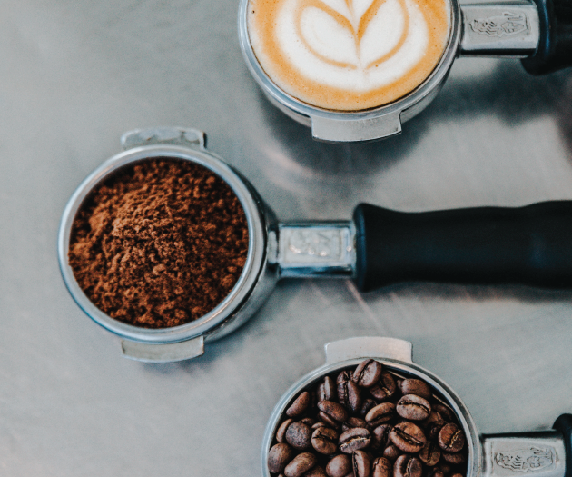
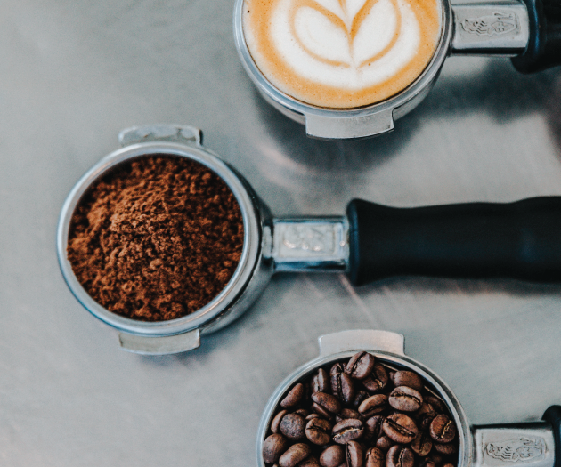
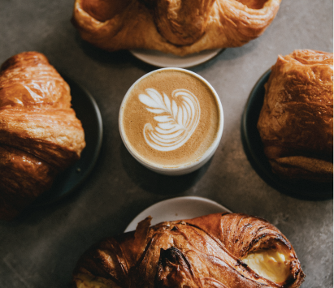

About
Contact
Visit
 

What's Brewin?
What’s Brewin is a locally owned and operated coffee
shop and cafe located in the heart of downtown Tomahawk, Wisconsin. We offer
a varity of food and coffee options. Stop on in and check it out!

Hours
Visit us any day of the week from
6:00am-3:00pm
Visit Us
Our Story
Growing up the owner worked with coffee and
saw the importance of coffees role in bringing people together.
What’s Brewin was founded on this idea, in the hopes to bring people together
through generations to come.
See More